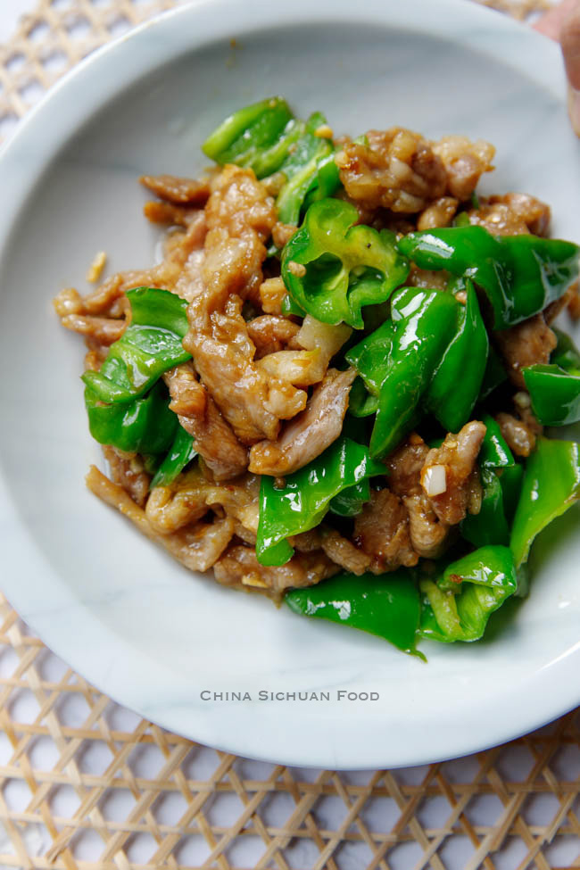

Pork and Pepper Stiry Fry

Description
This is a very simple recipe that can be whipped up in under 30 minutes. It is one of my favourite recipes that I make frequently, often adding any vegetables that I may have in the fridge. It is also quite healthy and you may make extras to store as leftovers for your next meal!
Ingredients
- 200 g pork tenderloin, thinly sliced
- 4 fresh peppers, remove the seeds and finely shredded
- 0.25 fresh red bell pepper, optional
- 2 garlic cloves
- 15 ml light soy sauce
Marination
- 15 ml light soy sauce
- salt
- white pepper
- 2.5 ml sugar
- 7.5 ml Shaoxing wine
- 60 ml water or chicken stock
- 15 ml cornstarch
- 10 ml vegetable oil
Steps
- Cut pork into small thin slices.
- Transfer the pork to a larger bowl, add sugar, salt, white pepper, light soy sauce, cooking wine and water. Combine well and make sure the pork absorbing all the liquid and marinating for at least 15 minutes.
- Then add cornstarch and mix well. Then mix in 2 teaspoons of vegetable cooking oil.
- Heat the wok firstly until really hot and then add oil and continue heating for 30 seconds. Add the pork shreds in and fry quickly for no more than 10 seconds or until the sheds changes turns pale. It is completely ok if it contains some pink inside. The remaining heat will continue cook it after transferring out. If you are working with an insufficient heat, you can cook the pork in two batches.
- Transfer out the pork immediately and remove extra oil. Leave only 1 tablespoon of oil inside and fry garlic until aromatic. Place shredded pepper slices in, fry for 10 to 20 seconds until slightly softened. Sprinkle a small amount of salt.
- Return pork and give a quick mix. Serve hot!